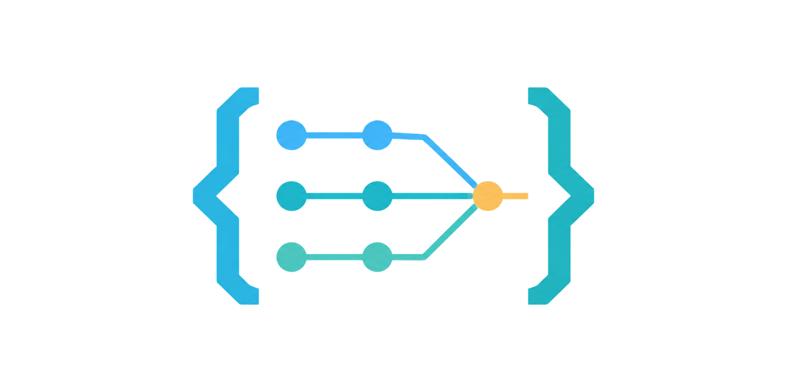

~/brace ❯
brace
Controlled agent workflows,
from plan to merge.
// Branch-Safe Repository Agent Coordination Engine.
## the_whole_idea
Many agents. One repository history you can trust.
Brace turns a project contract into isolated work, validates every result, and integrates it through real pull requests. Agents implement. Brace coordinates.
requirements.md
│
▼
plan ──→ parallel tasks ──→ verified PRs
│
▼
deep audit
│
▼
main ←── brace/integration ←── bug fixes## the_workflow
Three deliberate stages.
-
01
plan
Read
requirements.md, resolve only necessary questions, then produce a validated plan and dependency-aware task graph.plan.md + tasks.json -
02
build
Run ready tasks in parallel worktrees. Verify each focused commit before its provider pull request reaches the integration branch.
worktrees + PRs -
03
audit
Freeze a whole-project bug set, repair findings independently, validate the complete result, then merge to main.
bugs.json + merge
## built_for_real_repositories
Fast where it can be.
Strict where it matters.
- isolated worktrees
- One branch and checkout per task, bug, or approved amendment.
- exact identity
- Repository, commit, branch, pull request, and merge identities are verified.
- drift detection
- Unknown contract or integration changes stop the workflow instead of being assumed safe.
- durable recovery
- Assignments, results, and state survive interruption without inventing progress.
- human authority
- Retries handle operations. Decisions that change scope return to you.
// GitHub and Azure DevOps are supported. Agents never merge directly to main.
## install
Start with requirements.
# install the CLI
$ uv tool install git+https://github.com/Kmac907/Brace.git
# add Brace to a new or existing repository
$ brace init
# run the controlled workflow
$ brace plan
$ brace build
$ brace audit